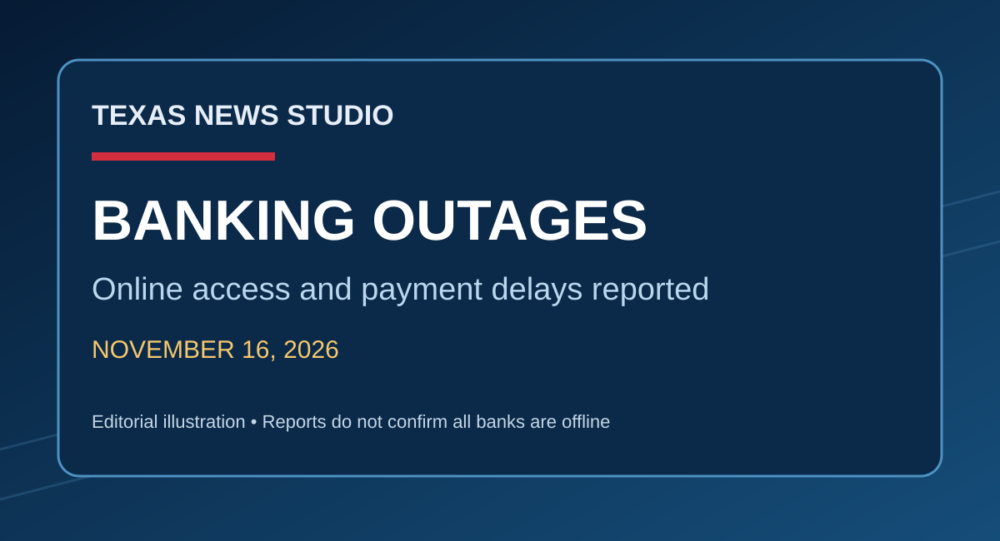

BREAKING NEWS · BANKING
Major U.S. Banks Draw Outage Reports as Customers Encounter Online Banking Problems

Customers across the United States reported trouble using online banking and payment services Monday, November 16. Downdetector recorded elevated user reports for Chase, Bank of America, Wells Fargo and U.S. Bank, with some reports involving Zelle transfers.
Chase acknowledged a technical issue that was slowing some transactions. The bank said customers still had access to their accounts and funds and that it was working to resolve the problem. Chase described the issue as technical rather than a cyberattack.
U.S. Bank said its own systems were not directly affected, although customers sending or receiving Zelle payments with other institutions could experience delays.
What is confirmed — and what is not
Downdetector tracks user-submitted complaints; a spike does not prove that every named bank suffered a separate systemwide outage. The full scope and any relationship between the reported disruptions had not been established at publication time.
Customers experiencing difficulties should check their bank's official service channels before retrying a payment, particularly to avoid duplicate transfers.
Sources
Associated Press: Customers at major U.S. banks report difficulty with online services